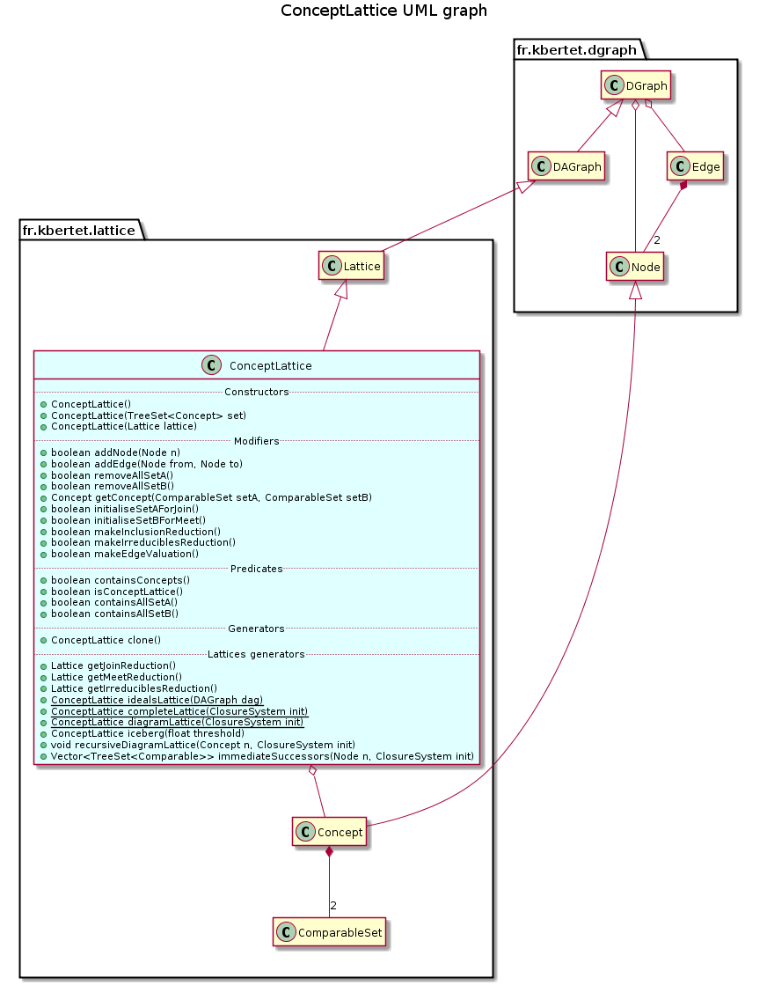

public class ConceptLattice extends Lattice
This class extends class Lattice to provide specific methods to manipulate both a concept lattice or a closed set lattice.
This class provides methods implementing classical operation on a concept lattice: join and meet reduction, concepts sets reduction, …
This class also provides two static method generating a concept lattice: methods diagramLattice(fr.kbertet.lattice.ClosureSystem) and completeLattice(fr.kbertet.lattice.ClosureSystem) both computes the closed set lattice of a given closure system. The firt one computes the hasse diagram of the closed set lattice by invoking method immediateSuccessors(fr.kbertet.dgraph.Node, fr.kbertet.lattice.ClosureSystem). This method implements an adaptation of the well-known Bordat algorithm that also computes the dependance graph of the lattice where at once the minimal generators and the canonical direct basis of the lattice are encoded. The second static method computes the transitively closure of the lattice as the inclusion relation defined on all the closures generated by method ClosureSystem.allClosures() that implements the well-known Wille algorithm.

| Constructor and Description |
|---|
ConceptLattice()
Constructs this component with an empty set of nodes.
|
ConceptLattice(Lattice lattice)
Constructs this component as a shallow copy of the specified lattice.
|
ConceptLattice(TreeSet<Concept> set)
Constructs this component with the specified set of concepts, and empty treemap of successors and predecessors.
|
| Modifier and Type | Method and Description |
|---|---|
boolean |
addEdge(Node from,
Node to)
Adds the specified edge to this component:
to is added as a successor of from. |
boolean |
addNode(Node n)
Adds the specified node to the set of node of this component.
|
ConceptLattice |
clone()
Returns a clone of this component composed of a clone of each concept and each edge.
|
static ConceptLattice |
completeLattice(ClosureSystem init)
Generates and returns the complete (i.e.
|
boolean |
containsAllSetA()
Check if this component is a lattice whose nodes are concepts with non null set A.
|
boolean |
containsAllSetB()
Check if this component is a lattice whose nodes are concepts with non null set A.
|
boolean |
containsConcepts()
Check if nodes of this component are concepts.
|
static ConceptLattice |
diagramLattice(ClosureSystem init)
Generates and returns the Hasse diagram of the closed set lattice of the specified closure system, that can be an implicational system (ImplicationalSystem) or a context.
|
Concept |
getConcept(ComparableSet setA,
ComparableSet setB)
Returns concept defined by setA and setB; null if not found.
|
Lattice |
getIrreduciblesReduction()
Returns a lattice where each join irreducible concept is replaced by a node containing the first element of set A, and each meet irreducible concept is replaced by a node contining the first element of set B.
|
Lattice |
getJoinReduction()
Returns a lattice where join irreducibles node’s content is replaced by the first element of set A.
|
Lattice |
getMeetReduction()
Returns a lattice where meet irreducibles node’s content is replaced by the first element of set B.
|
ConceptLattice |
iceberg(float threshold)
Returns iceberg lattice whose concept contains enough observations.
|
static ConceptLattice |
idealLattice(DAGraph dag)
Generate the lattice composed of all the antichains of this component ordered with the inclusion relation.
|
Vector<TreeSet<Comparable>> |
immediateSuccessors(Node n,
ClosureSystem init)
Returns the list of immediate successors of a given node of the lattice.
|
boolean |
initialiseSetAForJoin()
Replace null set A in each join irreducible concept with a set containing node ident.
|
boolean |
initialiseSetBForMeet()
Replace null set B in each meet irreducible concept with a set containing node ident.
|
boolean |
isConceptLattice()
Check if this component is a lattice whose nodes are concepts.
|
boolean |
makeEdgeValuation()
Returns a lattice where edges are valuated by the difference between set A of two adjacent concepts.
|
boolean |
makeInclusionReduction()
Replaces, if not empty, set A of each concept with the difference between itself and set A of its predecessors; Then replaces, if not empty, set B of each concept by the difference between itself and set B of its successors.
|
boolean |
makeIrreduciblesReduction()
Replaces set A of each join irreducible node by the difference between itself and set A of the unique predecessor.
|
void |
recursiveDiagramLattice(Concept n,
ClosureSystem init)
Returns the Hasse diagramme of the closed set lattice of the specified closure system issued from the specified concept.
|
boolean |
removeAllSetA()
Replace set A in each concept of the lattice with the null value.
|
boolean |
removeAllSetB()
Replace set B in each concept of the lattice with the null value.
|
void |
save(String filename)
Save the description of this component in a file whose name is specified.
|
bottom, fullClosure, getArrowRelation, getCanonicalDirectBasis, getDependencyGraph, getImplicationalSystem, getMinimalGenerators, getTable, hasDependencyGraph, hybridGenerators, irreducibleClosure, irreduciblesSubgraph, isAtomistic, isCN, isCoAtomistic, isLattice, join, joinClosure, joinClosure, joinIrreducibles, joinIrreducibles, joinIrreduciblesSubgraph, meet, meetClosure, meetClosure, meetIrreducibles, meetIrreducibles, meetIrreduciblesSubgraph, setDependencyGraph, topdivisors, filter, getSubgraphByNodes, ideal, majorants, max, min, minorants, random, random, transitiveClosure, transitiveReductionaddEdge, addEdge, complementary, containsEdge, containsEdge, containsNode, getEdge, getEdges, getNode, getNodeByContent, getNodeByIdentifier, getNodes, getPredecessorEdges, getPredecessorNodes, getPredecessors, getSinks, getStronglyConnectedComponent, getSubgraphByEdges, getSuccessorEdges, getSuccessorNodes, getSuccessors, getWells, isAcyclic, reflexiveClosure, reflexiveReduction, removeEdge, removeEdge, removeNode, removeNodes, setNodes, setPredecessors, setSuccessors, sizeEdges, sizeNodes, topologicalSort, toString, transposepublic ConceptLattice()
Constructs this component with an empty set of nodes.
public ConceptLattice(TreeSet<Concept> set)
Constructs this component with the specified set of concepts, and empty treemap of successors and predecessors.
set - the set of nodespublic ConceptLattice(Lattice lattice)
Constructs this component as a shallow copy of the specified lattice.
Concept lattice property is checked for the specified lattice. When not verified, this component is constructed with an empty set of nodes.
lattice - the lattice to be copiedpublic boolean addNode(Node n)
Adds the specified node to the set of node of this component.
In the case where content of this node is not a concept, the node will not be added
public boolean addEdge(Node from, Node to)
Adds the specified edge to this component: to is added as a successor of from.
If the cases where specified nodes don’t belongs to the node set, and where nodes don’t contains concept as content, then the edge will not be added.
public boolean containsConcepts()
Check if nodes of this component are concepts.
Comment the return
public boolean isConceptLattice()
Check if this component is a lattice whose nodes are concepts.
Comment the return
public boolean containsAllSetA()
Check if this component is a lattice whose nodes are concepts with non null set A.
Comment the return: conception
public boolean containsAllSetB()
Check if this component is a lattice whose nodes are concepts with non null set A.
Comment the return
public ConceptLattice clone()
Returns a clone of this component composed of a clone of each concept and each edge.
public Concept getConcept(ComparableSet setA, ComparableSet setB)
Returns concept defined by setA and setB; null if not found.
setA - intent of the concept to findsetB - extent of the concept to findpublic boolean removeAllSetA()
Replace set A in each concept of the lattice with the null value.
Comment the return
public boolean removeAllSetB()
Replace set B in each concept of the lattice with the null value.
Comment the return
public boolean initialiseSetAForJoin()
Replace null set A in each join irreducible concept with a set containing node ident.
Comment the return
public boolean initialiseSetBForMeet()
Replace null set B in each meet irreducible concept with a set containing node ident.
Comment the return
public boolean makeInclusionReduction()
Replaces, if not empty, set A of each concept with the difference between itself and set A of its predecessors; Then replaces, if not empty, set B of each concept by the difference between itself and set B of its successors.
Comment the return
public boolean makeIrreduciblesReduction()
Replaces set A of each join irreducible node by the difference between itself and set A of the unique predecessor.
Others closed sets are replaced by an emptyset.
Comment the return
public boolean makeEdgeValuation()
Returns a lattice where edges are valuated by the difference between set A of two adjacent concepts.
Change comment
public Lattice getJoinReduction()
Returns a lattice where join irreducibles node’s content is replaced by the first element of set A.
Other nodes are replaced by a new comparable.
public Lattice getMeetReduction()
Returns a lattice where meet irreducibles node’s content is replaced by the first element of set B.
Other nodes are replaced by a new comparable.
public Lattice getIrreduciblesReduction()
Returns a lattice where each join irreducible concept is replaced by a node containing the first element of set A, and each meet irreducible concept is replaced by a node contining the first element of set B.
A concept that is at once join and meet irreducible is replaced by a node containing the first element of set A and the first element of set B in a set. Other nodes are replaced by an empty node.
public static ConceptLattice idealLattice(DAGraph dag)
Generate the lattice composed of all the antichains of this component ordered with the inclusion relation.
This treatment is performed in O(??) by implementation of Nourine algorithm that consists in a sequence of doubling intervals of nodes.
dag - a directed acyclic graphpublic ConceptLattice iceberg(float threshold)
Returns iceberg lattice whose concept contains enough observations.
Are kept only concept whose number of observation is over threshold. A top node is added to keep the lattice structure.
threshold - used to determine nodes to be kept.public static ConceptLattice completeLattice(ClosureSystem init)
Generates and returns the complete (i.e. transitively closed) closed set lattice of the specified closure system, that can be an implicational system (ImplicationalSystem) or a context.
The lattice is generated using the well-known Next Closure algorithm. All closures are first generated using the method: ClosureSystem.allClosures() that implements the well-known Next Closure algorithm. Then, all concepts are ordered by inclusion.
init - a closure system (an ImplicationalSystem or a Context)public static ConceptLattice diagramLattice(ClosureSystem init)
Generates and returns the Hasse diagram of the closed set lattice of the specified closure system, that can be an implicational system (ImplicationalSystem) or a context.
The Hasse diagramm of the closed set lattice is obtained by a recursively generation of immediate successors of a given closed set, starting from the botom closed set. Implemented algorithm is an adaptation of Bordat’s algorithm where the dependance graph is computed while the lattice is generated. This treatment is performed in O(cCl|S|^3log g) where S is the initial set of elements, c is the number of closed sets that could be exponential in the worst case, Cl is the closure computation complexity and g is the number of minimal generators of the lattice.
The dependance graph of the lattice is also computed while the lattice generation. The dependance graph of a lattice encodes at once the minimal generators and the canonical direct basis of the lattice .
init - a closure system (an ImplicationalSystem or a Context)public void recursiveDiagramLattice(Concept n, ClosureSystem init)
Returns the Hasse diagramme of the closed set lattice of the specified closure system issued from the specified concept.
Immediate successors generation is an adaptation of Bordat’s theorem stating that there is a bijection between minimal strongly connected component of the precedence subgraph issued from the specified node, and its immediate successors.
This treatment is performed in O(cCl|S|^3log g) where S is the initial set of elements, c is the number of closed sets that could be exponential in the worst case, Cl is the closure computation complexity and g is the number of minimal generators of the lattice.
n - a conceptinit - a closure systempublic Vector<TreeSet<Comparable>> immediateSuccessors(Node n, ClosureSystem init)
Returns the list of immediate successors of a given node of the lattice.
This treatment is an adaptation of Bordat’s theorem stating that there is a bijection between minimal strongly connected component of the precedence subgraph issued from the specified node, and its immediate successors.
This treatment is performed in O(Cl|S|^3log g) where S is the initial set of elements, Cl is the closure computation complexity and g is the number of minimal generators of the lattice.
This treatment is recursively invoked by method recursiveDiagramlattice. In this case, the dependance graph is initialised by method recursiveDiagramMethod, and updated by this method, with addition some news edges and/or new valuations on existing edges. When this treatment is not invoked by method recursiveDiagramLattice, then the dependance graph is initialised, but it may be not complete. It is the case for example for on-line generation of the concept lattice.
n - a nodeinit - a closure systempublic void save(String filename) throws IOException
Save the description of this component in a file whose name is specified.
save in class DGraphfilename - the name of the fileIOException - When an IOException occursCopyright © 2010–2014 Karell Bertet. All rights reserved.